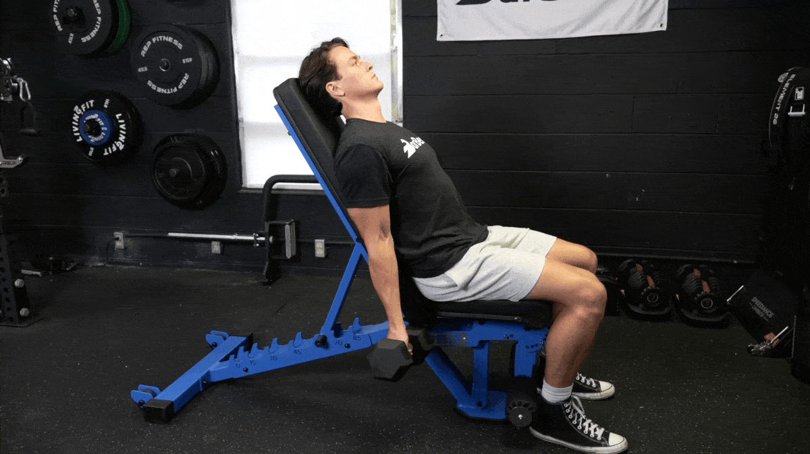
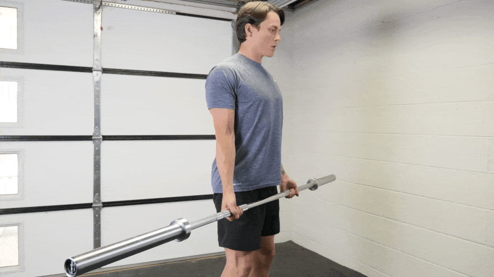
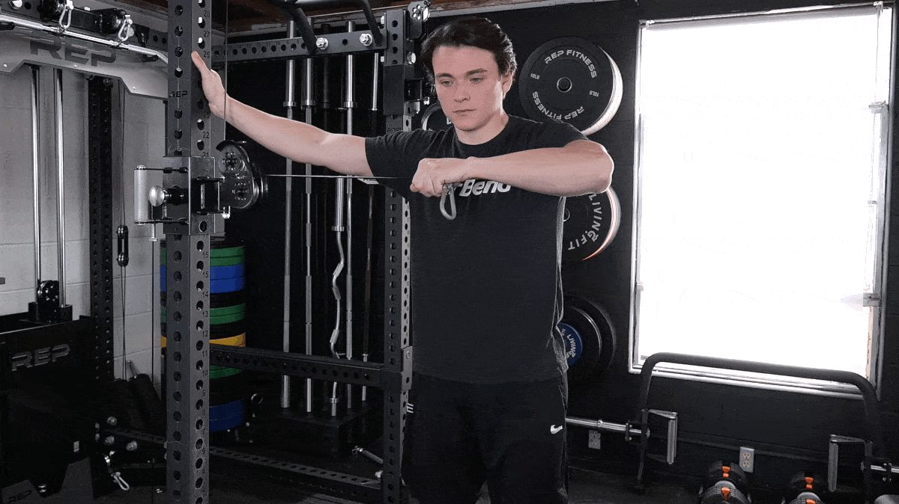
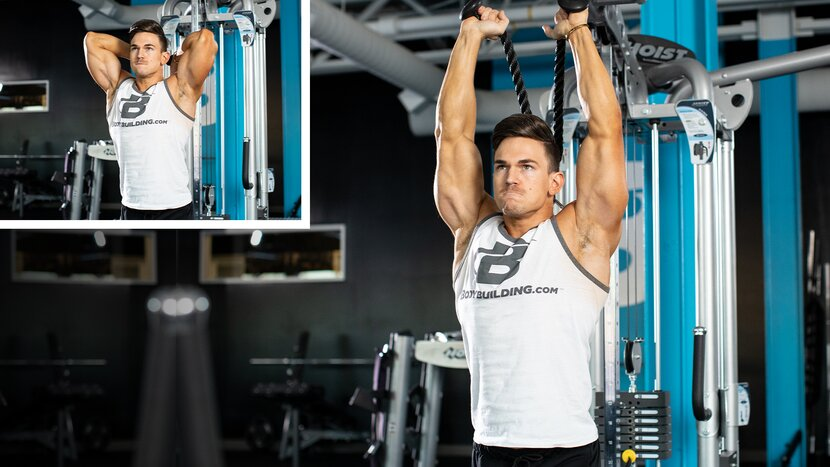

Muscles Targeted: Primary emphasis on the biceps brachii (biceps muscles), with secondary involvement of the brachialis and brachioradialis muscles.
Equipment Needed: Dumbbells or barbell.
Description:
The Bayesian curl is a variation of the traditional biceps curl that involves a unique range of motion, emphasizing both the concentric and eccentric phases of the exercise. It's an effective movement for targeting the biceps muscles while also improving muscle endurance and control.
Steps:
Starting Position: Stand with your feet shoulder-width apart, holding a dumbbell or barbell in each hand with your arms fully extended downward and palms facing forward.
Curl the Weights: Exhale and curl the weights upward toward your shoulders, keeping your elbows close to your sides and minimizing momentum. Contract your biceps at the top of the movement.
Rotate the Palms: At the top of the curl, rotate your palms inward (supinate) to fully engage the biceps muscles.
Lower the Weights: Inhale and slowly lower the weights back to the starting position, resisting gravity and maintaining control throughout the eccentric (lowering) phase of the movement.
Repeat: Aim for 3 sets of 10-15 repetitions, focusing on quality over quantity and maintaining proper form throughout each repetition.
Tips:
Keep your core engaged and maintain a neutral spine throughout the movement to avoid excessive arching or rounding of the back.
Focus on using the biceps muscles to lift the weights rather than relying on momentum or swinging.
Control the descent of the weights to maximize time under tension and enhance muscle growth.
Adjust the weight according to your strength and fitness level, ensuring proper form and technique are maintained.
Incorporate the Bayesian curl into your biceps workout routine to target and strengthen the biceps muscles, improving both size and definition. Focus on proper form and technique to maximize the effectiveness of the exercise and minimize the risk of injury.
Incline Dumbbell Curl

Muscles Targeted: Primary emphasis on the biceps brachii (biceps muscles), with secondary involvement of the brachialis and brachioradialis muscles.
Equipment Needed: Incline bench and dumbbells.
Description:
The incline dumbbell curl is a variation of the traditional biceps curl that targets the biceps muscles from a different angle. By performing the exercise on an incline bench, you engage the biceps more effectively while also reducing the involvement of other muscle groups, such as the shoulders and back.
Steps:
Setup: Set an incline bench to a 45-degree angle. Sit on the bench with your back supported and feet flat on the floor.
Starting Position: Hold a dumbbell in each hand with your arms fully extended downward and palms facing forward. Let your arms hang straight down toward the floor.
Curl the Weights: Exhale and curl the weights upward toward your shoulders, keeping your elbows close to your sides and minimizing momentum. Contract your biceps at the top of the movement.
Lower the Weights: Inhale and slowly lower the weights back to the starting position, maintaining control and resisting gravity throughout the eccentric (lowering) phase of the movement.
Repeat: Aim for 3 sets of 10-15 repetitions, focusing on quality over quantity and maintaining proper form throughout each repetition.
Tips:
Keep your back firmly against the incline bench throughout the movement to maintain stability and avoid arching.
Focus on using the biceps muscles to lift the weights rather than relying on momentum or swinging.
Control the descent of the weights to maximize time under tension and enhance muscle growth.
Adjust the weight according to your strength and fitness level, ensuring proper form and technique are maintained.
Incorporate the incline dumbbell curl into your biceps workout routine to target and strengthen the biceps muscles from a different angle, helping to improve overall biceps development and arm aesthetics. Focus on proper form and technique to maximize the effectiveness of the exercise and minimize the risk of injury.
Drag Curl

Muscles Targeted: Primary emphasis on the biceps brachii (biceps muscles), with secondary involvement of the brachialis and brachioradialis muscles.
Equipment Needed: Barbell or EZ bar.
Description:
The drag curl is a biceps exercise that emphasizes the contraction of the biceps muscles by minimizing the involvement of other muscle groups, such as the shoulders and back. By keeping the elbows behind the body throughout the movement, you create a drag or friction against the body, maximizing biceps activation.
Steps:
Starting Position: Stand with your feet shoulder-width apart, holding a barbell or EZ bar with an underhand grip (palms facing up) and hands positioned slightly wider than shoulder-width apart.
Drag the Bar: Keeping your elbows close to your sides, exhale and pull the barbell upward along your torso, dragging it against your body until it reaches chest level. Focus on squeezing your biceps throughout the movement.
Contract the Biceps: At the top of the movement, pause briefly and squeeze your biceps muscles to maximize the contraction.
Lower the Bar: Inhale and slowly lower the barbell back to the starting position, maintaining control and resisting gravity throughout the eccentric (lowering) phase of the movement.
Repeat: Aim for 3 sets of 10-15 repetitions, focusing on quality over quantity and maintaining proper form throughout each repetition.
Tips:
Keep your back straight and core engaged throughout the movement to maintain stability and avoid arching.
Focus on using the biceps muscles to lift the barbell rather than relying on momentum or swinging.
Control the descent of the barbell to maximize time under tension and enhance muscle growth.
Adjust the weight according to your strength and fitness level, ensuring proper form and technique are maintained.
Incorporate the drag curl into your biceps workout routine to target and strengthen the biceps muscles with minimal involvement of other muscle groups. Focus on proper form and technique to maximize the effectiveness of the exercise and minimize the risk of injury.
Triceps Exercise: Cross-Body Triceps Stretch

Muscles Targeted: Primary emphasis on the triceps brachii (triceps muscles).
Equipment Needed: None (bodyweight exercise).
Description:
The cross-body triceps stretch is a simple yet effective exercise for stretching and improving flexibility in the triceps muscles. It helps to alleviate tightness and discomfort in the triceps region, promoting better range of motion and preventing injury.
Steps:
Starting Position: Stand or sit comfortably with your back straight and shoulders relaxed.
Arm Position: Extend one arm overhead and bend it at the elbow, bringing your hand down behind your head and between your shoulder blades.
Cross the Body: Use your other hand to gently press the elbow of the stretched arm across your body towards the opposite shoulder.
Hold the Stretch: Hold the stretch for 15-30 seconds, feeling a gentle pull in the triceps muscles.
Switch Sides: Release the stretch and repeat on the other side, stretching the opposite triceps.
Repeat: Perform 2-3 sets of stretches on each arm, gradually increasing the duration of the stretch as you feel more comfortable.
Tips:
Breathe deeply and exhale as you deepen the stretch, allowing your muscles to relax and elongate.
Avoid bouncing or jerking movements during the stretch, as this can cause strain or injury to the muscles.
Focus on maintaining good posture throughout the stretch, keeping your spine straight and shoulders relaxed.
Listen to your body and stretch to the point of mild discomfort, but never to the point of pain.
Incorporate the cross-body triceps stretch into your triceps workout routine to improve flexibility and range of motion in the triceps muscles. Perform the stretch regularly, especially after workouts, to help prevent muscle tightness and reduce the risk of injury.
Muscles Targeted: Primary emphasis on the triceps brachii (triceps muscles).
Equipment Needed: Cable machine with a single-handle attachment.
Description:
The single-arm overhead cable triceps extension is an isolation exercise that targets the triceps muscles by extending the elbow against resistance. It helps to strengthen and tone the triceps while also improving muscle balance and coordination.
Steps:
Setup: Attach a single-handle to the high pulley of a cable machine. Adjust the weight stack to an appropriate resistance.
Starting Position: Stand facing away from the cable machine with your feet shoulder-width apart. Grasp the handle with one hand and position your arm overhead with your elbow bent and hand behind your head.
Extension: Exhale and extend your elbow, pushing the handle downward until your arm is fully extended. Keep your upper arm stationary throughout the movement.
Contract the Triceps: At the bottom of the movement, pause briefly and squeeze your triceps muscles to maximize the contraction.
Return to Starting Position: Inhale and slowly reverse the movement, returning your arm to the starting position with control.
Repeat: Aim for 3 sets of 10-15 repetitions on each arm, alternating between arms for each set.
Tips:
Maintain a stable stance throughout the exercise, with your core engaged and feet firmly planted on the ground.
Keep your elbow close to your head and your upper arm stationary to isolate the triceps muscles.
Focus on using your triceps to move the weight, rather than relying on momentum or swinging.
Control the movement and avoid locking out your elbow at the bottom of the exercise to prevent strain on the joint.
Incorporate the single-arm overhead cable triceps extension into your triceps workout routine to target and strengthen the triceps muscles. Focus on proper form and technique to maximize the effectiveness of the exercise and minimize the risk of injury.
Triceps Exercise: Cable Overhead Extension With Rope

Muscles Targeted: Primary emphasis on the triceps brachii (triceps muscles).
Equipment Needed: Cable machine with a rope attachment.
Description:
The cable overhead extension with rope is an effective exercise for targeting the triceps muscles by extending the elbow against resistance. It provides constant tension throughout the movement, helping to strengthen and tone the triceps while also improving muscle endurance.
Steps:
Setup: Attach a rope to the high pulley of a cable machine. Adjust the weight stack to an appropriate resistance.
Starting Position: Stand facing away from the cable machine with your feet shoulder-width apart. Grasp the ends of the rope with an overhand grip and position your arms overhead with your elbows bent.
Extension: Exhale and extend your elbows, pushing the rope downward until your arms are fully extended. Keep your upper arms close to your head throughout the movement.
Contract the Triceps: At the bottom of the movement, pause briefly and squeeze your triceps muscles to maximize the contraction.
Return to Starting Position: Inhale and slowly reverse the movement, allowing the rope to return to the starting position with control.
Repeat: Aim for 3 sets of 10-15 repetitions, focusing on quality over quantity and maintaining proper form throughout each repetition.
Tips:
Maintain a stable stance throughout the exercise, with your core engaged and feet firmly planted on the ground.
Keep your elbows close to your head and your upper arms stationary to isolate the triceps muscles.
Focus on using your triceps to move the rope, rather than relying on momentum or swinging.
Control the movement and avoid locking out your elbows at the bottom of the exercise to prevent strain on the joints.
Incorporate the cable overhead extension with rope into your triceps workout routine to target and strengthen the triceps muscles. Focus on proper form and technique to maximize the effectiveness of the exercise and minimize the risk of injury.